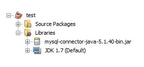

مقدمة
تحديد إسم الـ Driver الذي ستستخدمه كوسيط بين البرنامج و قاعدة البيانات يختلف تماماً من قاعدة بيانات إلى أخرى.
و تحديد رابط الوصول لقاعدة البيانات ( أي الـ URL) يختلف أيضاً على حسب نوعها.


تحديد إسم الـ Driver الذي ستستخدمه كوسيط بين البرنامج و قاعدة البيانات يختلف تماماً من قاعدة بيانات إلى أخرى.
و تحديد رابط الوصول لقاعدة البيانات ( أي الـ URL) يختلف أيضاً على حسب نوعها.
حتى نسهل الأمر عليك, وضعنا في الجدول التالي طريقة التعامل مع أشهر قواعد البيانات.
كل ما عليك فعله هو النظر إلى إسم قاعدة البيانات و رابط الوصول لها, لمعرفة إسم Driver الذي يجب أن تضعه كـ Argument للدالة forName(), و طريقة كتابة رابط الوصول لها و الذي يجب أن تضعه كـ Argument للدالة getConnection().
| قاعدة البيانات | إسم الـ Driver الخاص فيها | طريقة كتابة URL الوصول لها |
|---|---|---|
| ORACLE | oracle.jdbc.driver.OracleDriver | jdbc:oracle:thin:@hostname:portNumber:databaseName |
| MySQL | com.mysql.jdbc.Driver | jdbc:mysql://hostname:portNumber/databaseName |
| DB2 | COM.ibm.db2.jdbc.net.DB2Driver | jdbc:db2:hostname:portNumber/databaseName |
| Sybase | com.sybase.jdbc.SybDriver | jdbc:sybase:Tds:hostname:portNumber/databaseName |
مكتبة الـ jar بشكل عام, عبارة عن مجلد يحتوي على كلاسات مكتوبة بلغة جافا, و مصممة خصيصاً للتعامل مع شيء محدد.
للتعامل مع أي قاعدة بيانات في جافا, عليك تحميل مكتبة الـ jar الخاصة فيها, أي مجموعة الكلاسات الخاصة لربط برنامجك بها.
بعدها عليك إضافتها في برنامجك كما ستتعلم لاحقاً.
في الجدول التالي وضعنا روابط مباشرة لتحميل مكتبات الـ jar بسهولة.
| قاعدة البيانات | مكتبة الـ jar الخاصة فيها | تحميل المكتبة |
|---|---|---|
| ORACLE | oracle-driver-ojdbc-12.1.0.2 | تحميل ⇓ |
| MySQL | mysql-connector-java-5.1.40-bin | تحميل ⇓ |
| DB2 | db2jcc4 | تحميل ⇓ |
| Sybase | jtds-1.3.1 | تحميل ⇓ |
الخطوات التي ستتعملها الآن تختلف على حسب البرنامج الذي تقوم باستخدامه. هنا إستخدمنا برنامج الـ Netbeans.
في البداية, في برنامج الـ Netbeans عند إنشاء أي مشروع نلاحظ أنه يوجد مجلدين أساسيين:
مجلد الـ Source Packages: نضع فيه ملفات الجافا.
مجلد الـ Libraries: نضع فيه مكتبات الـ jar.
إذا قمت بإظهار الأشياء الموجودة بداخل مجلد الـ Libraries ستجد ملف الـ JDK الذي يستخدمه مشروعك.
ملاحظة: إصدار مجلد الـ JDK سيكون قديماً حتماً عن الذي تستخدمه عندك. لكن لا تلقي له بالاً.
الآن, لإضافة أي مكتبة jar في المشروع قم باتباع الخطوات التالية:
أنقر بزر الفأرة الأيمن على مجلد الـ Libraries.
إختر Add JAR/Folder.
إبحث عن مكتبة الـ jar التي قمت بتحميلها سابقاً, ثم أنقر Open.
بعد إضافة المكتبة, ستظهر في مجلد الـ Libraries.
هنا قمنا بإضافة مكتبة الـ jar الخاصة بقواعد بيانات MySQL. لاحظ كيف ستظهر في مجلد الـ Libraries.
 محرر الويب
محرر الويب نظام الألوان
نظام الألوان محول الوحدات
محول الوحدات محلل عناوين الشبكات
محلل عناوين الشبكات